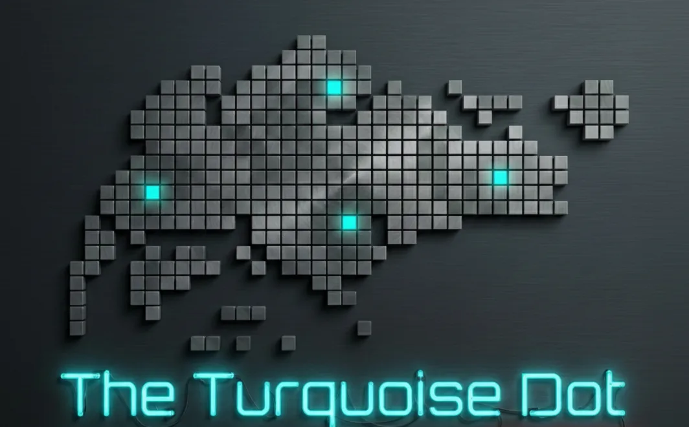

Singapore's Turkish and Turkic tech & research community
Quarterly deep-tech conversations at rotating venues across Singapore, from wearables and MedTech to cybersecurity and AI. We bring together students, researchers, academics, founders, and professionals, connecting two nodes: Türkiye ↔ Singapore.

Turkish and Turkic minds are shaping deep tech across the globe. The Turquoise Dot is their home in Asia's innovation capital.
Quarterly meetups at rotating venues: universities, research centres, startup offices. Each goes deep on one topic, with real talks and honest Q&A.
Co-hosting with local tech communities, research institutes, and university incubators, cross-pollinating ideas across Singapore's deep-tech scene.
A two-way deep-tech corridor already exists. We widen it through research links, startup exchange, and shared programmes between the two ecosystems.
Building a talent bridge toward internships and research opportunities for students and early-career researchers, in both directions.
A sold-out first evening: a Dyson engineer's wearable-device field notes, insights from the GRIP programme, and a community MedTech project review.
Event page ↗One threat, two perspectives: academia and industry in the same room, with opening remarks by H.E. Sadık Arslan, Ambassador of Türkiye to Singapore.
Event page ↗Embodied intelligence, from research bench to factory floor. Speakers: Dr Cihan Acar, Senior Research Scientist, A*STAR, and Selim Argül, Lead Engineer, Menlo Robotics.
Follow on Luma ↗Every event is free to join and listed on Luma. Bring a question; our Q&A is the honest kind.
See upcoming events →Have a talk, a lab tour, or a venue? We rotate across universities, research centres, and startup offices.
Propose a talk or venue →Back Singapore's Turkish and Turkic deep-tech community and reach researchers, founders, and engineers.
Start a conversation →